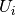
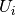
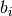
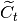
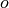
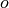

LSTM Networks for Sentiment Analysis¶
Summary¶
This tutorial aims to provide an example of how a Recurrent Neural Network (RNN) using the Long Short Term Memory (LSTM) architecture can be implemented using Theano. In this tutorial, this model is used to perform sentiment analysis on movie reviews from the Large Movie Review Dataset, sometimes known as the IMDB dataset.
In this task, given a movie review, the model attempts to predict whether it is positive or negative. This is a binary classification task.
Data¶
As previously mentioned, the provided scripts are used to train a LSTM recurrent neural network on the Large Movie Review Dataset dataset.
While the dataset is public, in this tutorial we provide a copy of the dataset that has previously been preprocessed according to the needs of this LSTM implementation. Running the code provided in this tutorial will automatically download the data to the local directory. In order to use your own data, please use a (preprocessing script) provided as a part of this tutorial.
Once the model is trained, you can test it with your own corpus using the word-index dictionary (imdb.dict.pkl.gz) provided as a part of this tutorial.
Model¶
LSTM¶
In a traditional recurrent neural network, during the gradient back-propagation phase, the gradient signal can end up being multiplied a large number of times (as many as the number of timesteps) by the weight matrix associated with the connections between the neurons of the recurrent hidden layer. This means that, the magnitude of weights in the transition matrix can have a strong impact on the learning process.
If the weights in this matrix are small (or, more formally, if the leading eigenvalue of the weight matrix is smaller than 1.0), it can lead to a situation called vanishing gradients where the gradient signal gets so small that learning either becomes very slow or stops working altogether. It can also make more difficult the task of learning long-term dependencies in the data. Conversely, if the weights in this matrix are large (or, again, more formally, if the leading eigenvalue of the weight matrix is larger than 1.0), it can lead to a situation where the gradient signal is so large that it can cause learning to diverge. This is often referred to as exploding gradients.
These issues are the main motivation behind the LSTM model which introduces a new structure called a memory cell (see Figure 1 below). A memory cell is composed of four main elements: an input gate, a neuron with a self-recurrent connection (a connection to itself), a forget gate and an output gate. The self-recurrent connection has a weight of 1.0 and ensures that, barring any outside interference, the state of a memory cell can remain constant from one timestep to another. The gates serve to modulate the interactions between the memory cell itself and its environment. The input gate can allow incoming signal to alter the state of the memory cell or block it. On the other hand, the output gate can allow the state of the memory cell to have an effect on other neurons or prevent it. Finally, the forget gate can modulate the memory cell’s self-recurrent connection, allowing the cell to remember or forget its previous state, as needed.
Figure 1: Illustration of an LSTM memory cell.
The equations below describe how a layer of memory cells is updated at every
timestep  . In these equations:
. In these equations:
- is the input to the memory cell layer at time
- ,
 , , , ,
, , and are weight
matrices
, , , ,
, , and are weight
matrices - , , and are bias vectors
First, we compute the values for , the input gate, and
 the candidate value for the states of the memory
cells at time :
(1)
(2)
Second, we compute the value for  , the activation of the memory
cells’ forget gates at time :
, the activation of the memory
cells’ forget gates at time :
(3)
Given the value of the input gate activation , the forget gate
activation and the candidate state value ,
we can compute the memory cells’ new state at time :
(4)
With the new state of the memory cells, we can compute the value of their output gates and, subsequently, their outputs:
(5)
(6)
Our model¶
The model we used in this tutorial is a variation of the standard LSTM model. In this variant, the activation of a cell’s output gate does not depend on the memory cell’s state . This allows us to perform part of the computation more efficiently (see the implementation note, below, for details). This means that, in the variant we have implemented, there is no matrix and equation (5) is replaced by equation (7):
(7)
Our model is composed of a single LSTM layer followed by an average pooling and a logistic regression layer as illustrated in Figure 2 below. Thus, from an input sequence , the memory cells in the LSTM layer will produce a representation sequence . This representation sequence is then averaged over all timesteps resulting in representation h. Finally, this representation is fed to a logistic regression layer whose target is the class label associated with the input sequence.
Figure 2 : Illustration of the model used in this tutorial. It is composed of a single LSTM layer followed by mean pooling over time and logistic regression.
Implementation note : In the code included this tutorial, the equations
(1), (2), (3) and (7) are performed in parallel to make
the computation more efficient. This is possible because none of these
equations rely on a result produced by the other ones. It is achieved by
concatenating the four matrices  into a single weight matrix
into a single weight matrix
 and performing the same concatenation on the weight matrices
and performing the same concatenation on the weight matrices
 to produce the matrix
to produce the matrix  and the bias vectors
to produce the vector
and the bias vectors
to produce the vector  . Then, the pre-nonlinearity activations can
be computed with:
. Then, the pre-nonlinearity activations can
be computed with:
The result is then sliced to obtain the pre-nonlinearity activations for
 , , , and  and the
non-linearities are then applied independently for each.
, , , and  and the
non-linearities are then applied independently for each.
Code - Citations - Contact¶
Code¶
The LSTM implementation can be found in the two following files:
- lstm.py: Main script. Defines and train the model.
- imdb.py: Secondary script. Handles the loading and preprocessing of the IMDB dataset.
After downloading both scripts and putting both in the same folder, the user can run the code by calling:
THEANO_FLAGS="floatX=float32" python lstm.py
The script will automatically download the data and decompress it.
Note: The provided code supports the Stochastic Gradient Descent (SGD), AdaDelta and RMSProp optimization methods. You are advised to use AdaDelta or RMSProp because SGD appears to performs poorly on this task with this particular model.
Papers¶
If you use this tutorial, please cite the following papers.
Introduction of the LSTM model:
- [pdf] Hochreiter, S., & Schmidhuber, J. (1997). Long short-term memory. Neural computation, 9(8), 1735-1780.
Addition of the forget gate to the LSTM model:
- [pdf] Gers, F. A., Schmidhuber, J., & Cummins, F. (2000). Learning to forget: Continual prediction with LSTM. Neural computation, 12(10), 2451-2471.
More recent LSTM paper:
- [pdf] Graves, Alex. Supervised sequence labelling with recurrent neural networks. Vol. 385. Springer, 2012.
Papers related to Theano:
- [pdf] Bastien, Frédéric, Lamblin, Pascal, Pascanu, Razvan, Bergstra, James, Goodfellow, Ian, Bergeron, Arnaud, Bouchard, Nicolas, and Bengio, Yoshua. Theano: new features and speed improvements. NIPS Workshop on Deep Learning and Unsupervised Feature Learning, 2012.
- [pdf] Bergstra, James, Breuleux, Olivier, Bastien, Frédéric, Lamblin, Pascal, Pascanu, Razvan, Desjardins, Guillaume, Turian, Joseph, Warde-Farley, David, and Bengio, Yoshua. Theano: a CPU and GPU math expression compiler. In Proceedings of the Python for Scientific Computing Conference (SciPy), June 2010.
Thank you!
Contact¶
Please email Pierre Luc Carrier or Kyunghyun Cho for any problem report or feedback. We will be glad to hear from you.
References¶
- Hochreiter, S., & Schmidhuber, J. (1997). Long short-term memory. Neural computation, 9(8), 1735-1780.
- Gers, F. A., Schmidhuber, J., & Cummins, F. (2000). Learning to forget: Continual prediction with LSTM. Neural computation, 12(10), 2451-2471.
- Graves, A. (2012). Supervised sequence labelling with recurrent neural networks (Vol. 385). Springer.
- Hochreiter, S., Bengio, Y., Frasconi, P., & Schmidhuber, J. (2001). Gradient flow in recurrent nets: the difficulty of learning long-term dependencies.
- Bengio, Y., Simard, P., & Frasconi, P. (1994). Learning long-term dependencies with gradient descent is difficult. Neural Networks, IEEE Transactions on, 5(2), 157-166.
- Maas, A. L., Daly, R. E., Pham, P. T., Huang, D., Ng, A. Y., & Potts, C. (2011, June). Learning word vectors for sentiment analysis. In Proceedings of the 49th Annual Meeting of the Association for Computational Linguistics: Human Language Technologies-Volume 1 (pp. 142-150). Association for Computational Linguistics.